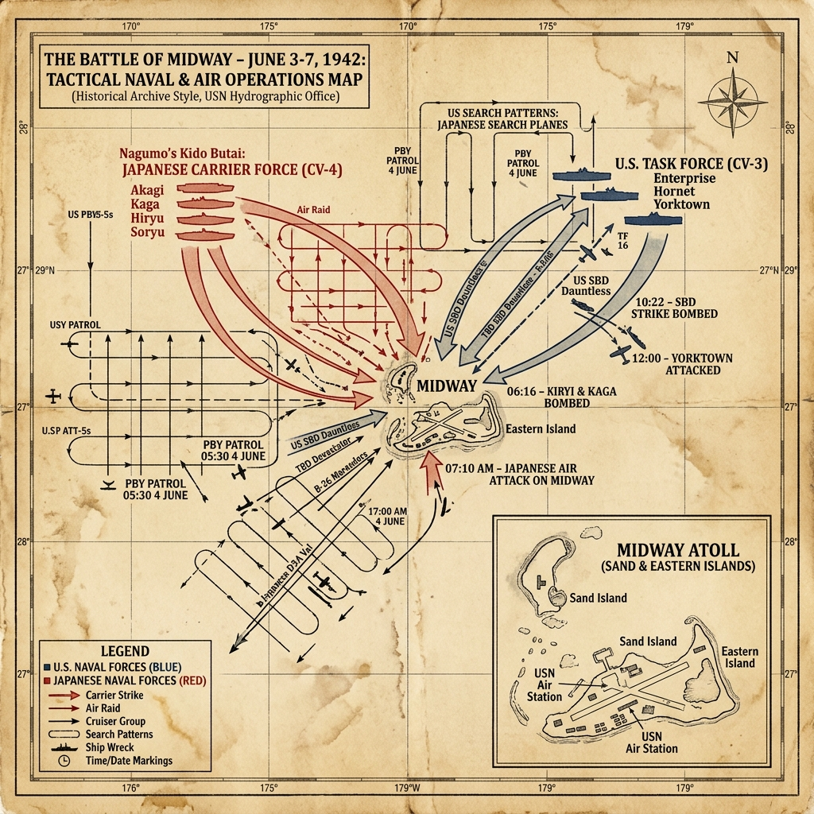

Strategic Context & The Intelligence War
Following the success of their early offensives, the Japanese military sought to expand their defensive perimeter in the Pacific. Admiral Isoroku Yamamoto conceived a plan to lure the remaining US aircraft carriers into a decisive battle by invading the Midway Atoll, a tiny outpost northwest of Hawaii. Yamamoto believed that the US carriers, which had escaped Pearl Harbor and launched the daring Doolittle Raid on Tokyo, were the primary threat to the Japanese Empire.
However, the Japanese plan was compromised by American cryptanalysts. Station HYPO in Hawaii, led by Commander Joseph Rochefort, had partially decrypted the Japanese naval code, JN-25. Rochefort's team suspected that the target 'AF' was Midway. To confirm this, they instructed the Midway base to send an unencrypted message claiming their water distillation system had broken. Shortly after, a decrypted Japanese dispatch reported that 'AF was short of water', confirming Midway as the target and allowing Admiral Chester Nimitz to plan an ambush.
Military Doctrines & War Plans
The Japanese plan was highly complex, involving multiple divisions, including a diversionary attack on the Aleutian Islands. It relied on secrecy and the assumption that the US fleet would only react after the landings at Midway had begun. The carriers under Admiral Nagumo were to launch air strikes to neutralize Midway's defenses before the arrival of the invasion fleet.
The American plan was simple and direct. Nimitz concentrated his three available carriers—USS Enterprise, USS Hornet, and the carrier USS Yorktown, which had been quickly repaired in Pearl Harbor after sustaining damage at the Battle of the Coral Sea—northeast of Midway. The US forces waited in secret, using search planes to locate the Japanese fleet before they were detected.
Weapons, Technology, and Logistics
The battle showcased carrier-based aircraft technology. The Japanese Mitsubishi A6M Zero was highly agile, easily outclassing the American Grumman F4F Wildcat. However, the Wildcat was more rugged and utilized tactics like the 'Thach Weave' to counter the Zero's maneuverability.
The primary American strike weapon was the Douglas SBD Dauntless dive-bomber, which delivered heavy armor-piercing bombs in steep dives. The Japanese carriers, although fast, lacked armored flight decks and had inadequate anti-aircraft fire control systems, leaving them vulnerable to diving attacks.
Opening Moves & Initial Clash
On June 4, 1942, Nagumo launched his first wave of 108 aircraft against Midway. The strike caused heavy damage to the base but did not destroy its airfields. Nagumo prepared a second wave, arming his aircraft with bombs to strike Midway again.
Simultaneously, American patrol planes located the Japanese carriers. At 7:00 AM, the US carriers began launching their aircraft. Shortly after, a Japanese search plane spotted the US fleet, reporting the presence of a carrier. Nagumo was forced to halt the rearmament, ordering his crews to switch from ground-bombs back to torpedoes to target the American ships, leaving the decks covered in fuel lines and munitions.
The Turning Point: The Morning Dive-Bomber Attack
The initial American air attacks were uncoordinated and met with disaster. Torpedo bomber squadrons—many flying obsolete TBD Devastators without adequate fighter escort—were savaged by Zero fighters. Of 41 torpedo planes in the main carrier attacks, only a handful returned. Their sacrifice, however, pulled Japanese combat air patrol down to low altitude and disrupted flight-deck operations at a critical moment.
Around 10:20–10:30 AM, Douglas SBD Dauntless dive-bombers from Enterprise and Yorktown arrived at high altitude and struck the carriers Akagi, Kaga, and Sōryū. Within minutes, all three were mortally damaged and burning. Popular accounts call this the 'five fatal minutes' and sometimes claim Japanese decks were seconds from launching a full strike that would have destroyed the US carriers. Research by Jonathan Parshall and Anthony Tully in Shattered Sword shows that picture is oversimplified: Japanese rearming and spotting timelines do not support a near-simultaneous full-deck launch at the instant of the attack. The dive-bombers' arrival was still decisive—and still a product of intelligence, timing, and Japanese doctrinal rigidity—but it was not a simple five-minute near-miss of total Japanese victory.
The Final Carrier Engagements
The remaining Japanese carrier, Hiryu, commanded by Rear Admiral Tamon Yamaguchi, launched a retaliatory strike that located and heavily damaged the USS Yorktown. Yorktown's crew managed to extinguish fires and restore power, but a second Japanese strike hit the carrier with torpedoes, forcing the captain to order abandon ship.
At 4:00 PM, dive-bombers from Enterprise and Yorktown located Hiryu, striking it with several bombs and leaving it burning. Hiryu was scuttled the next morning. With all four Japanese carriers destroyed, Admiral Yamamoto was forced to cancel the invasion of Midway and order a general retreat, ending the battle.
Pivot Points & Key Decisions
The most critical decision was Nimitz's trust in his intelligence officers. Had he ignored Rochefort's analysis, the US fleet would have been out of position, allowing Japan to capture Midway and threaten Hawaii.
Another pivot point was Nagumo's decision to rearm his planes on the flight decks. This delay, combined with the decoy attacks by the American torpedo bombers, created the perfect opportunity for the US dive-bombers to strike the Japanese carriers at their most vulnerable moment.
The Soldier's Ordeal & Civilian Impact
For the aircrews, the battle was a deadly test. Pilots flew long distances over the ocean, knowing that mechanical failure or damage meant landing in the water with little hope of rescue. The story of Ensign George Gay, the sole survivor of Torpedo Squadron 8, who floated in the water for hours watching the destruction of the Japanese fleet, highlighted the high casualty rate.
Midway Atoll was populated by a few hundred US military personnel. The bombing raid on June 4 killed 11 personnel and destroyed fuel tanks and hangers. The base remained operational, serving as a critical refueling stop for search planes and submarines that hunted the retreating Japanese fleet.
The Aftermath & Strategic Consequences
The Battle of Midway was a catastrophic defeat for Japan, which lost four fleet carriers, one heavy cruiser, and over 240 aircraft. More importantly, they lost over 110 experienced pilots and hundreds of skilled aircraft mechanics, who could not be easily replaced.
This victory established parity in carrier forces in the Pacific and allowed the Allies to transition from a desperate defense to a counteroffensive strategy. Just two months later, the US Marines landed on Guadalcanal, initiating the island-hopping campaign that would lead to the home islands of Japan.
Historical Legacy & Long-term Impact
Midway is celebrated as one of the most decisive naval victories in military history. It demonstrated that codebreaking, information superiority, and carrier aviation had replaced the battleship as the decisive factors in naval warfare.
The battle also illustrates the role of contingency in war—the convergence of American dive-bombers while Japanese fighters were low and flight decks congested remains a classic study in timing—but modern scholarship cautions against reducing Midway to pure luck or a mythical five-minute window. Codebreaking, operational intelligence, Yorktown's rapid repair, and Japanese plan complexity all structured the outcome before the first bomb fell.
The Axis Perspective
For the Imperial Japanese Navy, Midway was a catastrophe of unimaginable proportions that shattered the myth of their invincibility. The complex plan relied heavily on surprise, and the Japanese leadership was utterly blindsided by the presence of the American carriers, believing them to be out of position or sunk. The shock of losing the core of the Kido Butai was so profound that the Japanese high command engaged in massive deception, hiding the true extent of the disaster not only from the Japanese public but even from the Emperor and the Imperial Japanese Army. Wounded sailors were kept strictly isolated upon returning home. Captain Mitsuo Fuchida, the legendary pilot who had led the attack on Pearl Harbor and who watched the destruction of the fleet from the deck of the doomed Akagi while recovering from appendicitis, later wrote of the agonizing realization of defeat. He vividly described the horror of those five fatal minutes: "Looking about, I was horrified at the destruction that had been wrought in a matter of seconds... The terrible fires were completely out of control. In a matter of minutes, the magnificent fleet which had been our country's glory was reduced to a few pathetic, smoking hulks." The battle exposed the rigid, inflexible nature of Japanese naval doctrine when confronted with the unexpected.
Tactical Map & Theater of Operations
A reconstruction of carrier maneuvering and air search sectors in the Pacific theater:

Figure: Battle of Midway, June 1942: Illustrating the search sectors, aircraft carrier positions, and tactical engagement coordinates that decided the carrier battle.
Archives, Primary Sources & Further Reading
To read official war reports, decrypts, and maps from the battle:
- National WWII Museum — Battle of Midway Accessible overview of the intelligence war, carrier battle, and strategic consequences.
- National WWII Museum — Road to Tokyo exhibit Museum exhibit pathway covering the Pacific campaign from Pearl Harbor through the road to Japan.
- Library of Congress — World War II maps and documents Primary maps, photographs, and documentary collections for further research.